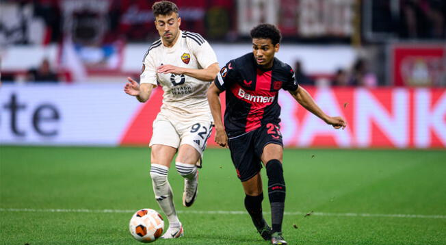

bienvenida
Hola, Bienvenidos a MataCenteno tu sitio web del fútbol
mundial.
Espero que tu visita a ésta plataforma sea de lo más
placentera y
quiero que sepas que siempre seras bienvenido
#7FFFD4

Mercado
-
El United iria a por las dos perlas del Benfica, Joao Neves y Antonio Silva, cuyos valores en millones de euros son de 120 y 100 respectivamente. Se ve dificil ya que el United no puede gastar tanto dinero y además, por ejemplo Joao Neves tiene contrato hasta el 2028 y Silva hasta el 2027. El United quiere negociar
-
El mediocentro brasilero renueva por un año más con el Arsenal
-
Tenemos Cubarsí en el Barcelona hasta el 2027
-
El Central madridista, Nacho quiere irse del Madrid a final de la actual temporada Se dice que va para el Inter de Milan, pero el jugador quiere irse a Estados Unidos o Arabia
-
El Girona de la Liga de España, está interesado por hacerse con los servicios del atacante uruguayo, Luciano Rodriguez. El actual jugador del Liverpool de Uruguay, está siendo pretendido por varios clubes suramericanos pero al parecer el club español lleva la delantera. El contrato sería por 4 a 5 años de duración. El club catalán estaría en la busqueda de refuerzos, ya que la proxima temporada juegan Champions
-
El Barcelona está muy interesado en comprar al delantero del Athletic Club, Nico Williams, sin embargo, Diario as, informa que Nico no saldria del equipo por 50 millones de euros, como se habia pensado, sino que su clausula es de 60 millones. Se ve dificil que el Barcelona pueda adquirir a Nico
-
El Barcelona está por mejorar su delantera y necesita jugadores de buen pie Entre esos está Darwin Nuñez, quien estaría interesado de irse al equipo catalan El delantero uruguayo borró todas sus fotos del Liverpool de su cuenta de instagram y ademas, su agente, Jorge Mendez, dió el ok para que Darwin vaya al Barcelona Lo que si es que dicen que el atacante uruguayo no saldria del Liverpool por menos de 85 millones de euros
-
El PSG está interesado en comprar al delantero georgiano, Kavartskelia del Napoli. Su contrato con el equipo italiano es hasta el 2027 y segun transfer market, su precio ronda los 80 millones de euros

Partidos para la semana del 13 y 14/02/2024 y
semana del 20 y 21/02/2024
Resultados de partidos de ida del Martes 13/02:
- RB Leipzig 0 vs Real Madrid CF 1
- FC Copenhague 1 vs Manchester City FC 3
Resultados de los partidos de ida del Miercoles 14/02:
- Lazio 1 vs Bayern Munich 0
- PSG FC 2 vs Real Sociedad 0
Resultados de los partidos de ida de octavos del martes 20/02/2024:
- PSV Eindhoven 1 vs Borussia Dortmund 1
- Inter Milan 1 vs Atletico de Madrid 0
Resultados de los partidos de ida de octavos del miercoles 21/02/2024:
- SSC Napoles 1 vs FC Barcelona 1
- FC Oporto 1 vs Arsenal 0
Resulatdos de los partidos de vuelta de octavos de final para el martes 05/03/2024
- Bayern Munich 3 vs 0 Lazio
- Real Sociedad 1 vs 2 PSG
Resultados de los partidos de vuelta de octavos de final para el miercoles 06/03/2024
- Real Madrid CF 1 vs 1 RB Leipzig
- Manchester City FC 3 vs 1 FC Copenhague
Resultados de los partidos de vuelta de octavos para el martes 12/03/2024:
- Arsenal 1 (4)vs(3) 0 Porto
- Barcelona 3 vs 1 Napoli
Resultados de los partidos de vuelta de octavos para el miercoles 13/03/2024:
- Borussia Dortmund 2 vs 0 PSV
- Atletico de Madrid 2 (3)vs(2) 1 Inter de Milan
Resultados de los partidos de ida de cuartos de final del martes 09/04/2024:
- Real Madrid 3 vs 3 Manchester City
- FC Arsenal 2 vs 2 Bayern Munich
Resultados de los partidos de ida de cuartos de final del miercoles 10/04/2024
- PSG 2 vs 3 FC Barcelona
- Atletico de Madrid 2 vs 1 Borussia Dortmund
Resultados de los partidos de vuelta de cuartos de final del martes 16/04/2024:
- FC Barcelona 1 vs 4 PSG
- Borussia Dortmund 4 vs 2 Atletico de Madrid
Resultados de los partidos de vuelta de cuartos de final del miercoles 17/04/2024
- Manchester City 1 (3)vs(4) 1 Real Madrid
- Bayern Munich 1 vs 0 Arsenal
Resultados de los partidos de ida de semi finales de Champions
- Bayern Munich 2 vs 2 Real Madrid
- Borussia Dortmund 1 vs 0 PSG
Resultados de los partidos de ida de semi finales de Champions
- PSG 0 vs 1 Borussia Dortmund
- Real Madrid 2 vs 1 Bayern Munich
>Partido de Champions del martes 07/05/2024
PSG vs Borussia Dortmund, partido de vuelta de la semis de Champions. Partidazo de principio a fin. Un PSG que lo intento todo, un Mbappe que a pesar de las ganas no encontraba con quien jugar, un muy buen Vitinha, que junto con Dembele fueron los mejores del equipo parisino. Un Borussia Dortmund tapando los espacios por donde se podian comunicar los jugadores del equipo rival, un Julian Brandt tremendo, llevando el juego del medio campo y haciendo las pausas, un Hummels que además de haber sido el goleador del emcuemtro, también tuvo sus buenos momentos en defensa. De nuevo los palos y la mala fortuna le decian que no al PSG. El unico gol del encuentro fue de un tiro de esquina cobrado por Brandt y que dio a dar a la cabeza de Hummels quien no dudo en mandarla a guardar, un Donnaruma que dudo en salir a por el balón y que le dio la chance al defensa aleman de dar el cabezaso. 쮽racaso del PSG? 쮼s culpa de Mbappe? La verdad es que pienso que la culpa la tuvo Luis Enrique por esta forma de jugar con Mbappe, por ejemplo el hecho de que Mbappe tenga el balon y el lateral no le pasara por detras para llevarse las marcas y darle el espacio al delantero o el poner a Mbappe como delantero centro, posicion donde el frances no se siente comodo. Pienso que el PSG con Luis Enrique ha mejorado, los jugadores se esfuerzan mas por luchar los balones y tienen mejor conección, pero lamentablemente no supo dirigir a Mbappe Finalmente, tenemos al primer finalista de esta edición de la Champions, y es el Dortmund. Me gustaria una final Dortmund Madrid y que salga campeón el equipo aleman, quienes han demostrado ser los mejores de este certamen

Partido de Champions del miercoles 08/05/2024:
Casí todo el partido fue dominado por el Madrid. El Madrid atacaba y el Bayern se defendia esperando una oportunidad para atacar. Vinicius en muchas ocasiones desbordaba por la banda izquierda y tiraba un centro rastrero pero siempre la defensa teutona estuvo alerta y un Neuer gigante que hasta el momento le decia que no a la pelotita. Gnabri se lesionaba y entraba Alphonso Davies para jugar como extremo por izquierda. En una de las pocas que tuvo el Bayern, el balón le llegó a Musiala que con pase largo habilita a Alphonso Davies que dispara a porteria y golazo, Madrid 0 Bayern 1. Pero el Madrid no se quedo atras y Ancelotti mando a la cancha a Brahim Diaz y a Joselu. Faltando 5 minutos para terminar el partido y Vinicius dispara a porteria, Neuer lo para pero da rebote, que Joselu habilmente lo aprovecha para mandarla a guardar y Madrid 1 Bayern 1, Se venia abajo el Estadio. A los 2 minutos mas o menos, atacaba el Madrid, Nacho con el balón, se lo pasaba a Rudiger que desde la banda izquierda manda un centro para que Joselu tocara el balon y adentro, Madrid 2 Bayern 1 y bueno la locura se desataba en el Bernabeu. El principal dio 9 minutos de descuento y el Bayern se decidió atacar y por error del arbitro por pitar un fuera de juego inexistente de un jugador del Bayern, el gol de De Light no subio al marcador y después de dos minutos mas se acababa el partido. Que emocionante fue. Como dije anteriormente, la final deberia de ser Dortmund Madrid. Bueno tendremos que esperar al primero de junio para saber quien sera el campeón de la Champions
Europa League

En este mes de febrero se jugaran los partidos de play offs, donde
se enfrentaran los 8 equipos que quedaron de subcampeones de cada
grupo de la fase de grupos de esta competicion contra los 8
equipos que quedaron terceros en la fase de grupos de la Champions
de esta temporada
Como goleador de la competicion tenemos a Joao Pedro del Brighton
con 6 goles y como mejor asistidor a Kostas Fortounis del Olympiakos
con 6 asistencias
Los resultados de los partidos de ida de Play Offs de este jueves 15/02 son los siguientes:
- FC Shakhtar Donetsk 2 vs Olympique Marsella 2
- Young Boys 1 vs Sporting Portugal 3
- Galatasary SK 3 vs AC Sparta Praga 2
- Feyenoord Rotterdam 1 vs AS Roma 1
- SC Braga 2 vs Qarabag FK 4
- AC Milan 3 vs FC Stade Rennes 0
- RC Lens 0 vs SC Friburgo 0
- Benfica 2 vs Toulouse FC 1
Resultados de los partidos de Playoffs del jueves 22/02
- Qarabag FK 2 vs SC Braga 3
- SC Friburgo 3 vs RC Lens 2
- Toulouse FC 0 vs Benfica 0
- FC Stade Rennes 3 vs AC Milan 2
- Olympique Marsella 3 vs FC Shakhtar Donetsk 1
- Sporting Portugal 1 vs Young Boys 1
- AC Sparta Praga 4 vs Galatasary SK 1
- AS Roma 1 (4) vs Feyenoord Rotterdam 1 (2)
Total de equipos que van a octavos en la Europa League:
- Westham, Brighton, Rangers, Atalanta, Liverpool, Villarreal, Slavia Praga, Bayern Leverkusen
- Milan, Friburgo, Benfica, Qarabaq, Marsella, Sporting CP, Sparta de Praga, Roma
Fecha de sorteo de los octavos de final de la Europa League:
El sorteo para octavos de final de esta temporada sera este viernes 23/02 en Suiza
aproximadamente a las 7:00 de la mañana hora venezolana
Resultados de los partidos de octavos de final de la Europa League 23/24 de este jueves 07/03/2024:
- SP Portugal 1 vs 1 Atalanta
- FK Qarabag 2 vs 2 Bayern Leverkusen
- Roma 4 vs 0 Brighton
- S. Praga 1 vs 5 Liverpool
- Benfica 2 vs 2 Rangers
- Marsella 4 vs 0 Villarreal
- Milan 4 vs 2 Slavia P.
- Friburgo 1 vs 0 West Ham
Resultados de los partidos de vuelta de octavos para este jueves 14/03/2024:
- Slavia Praga 1 vs 3 Milan
- West Ham 5 vs 0 Friburgo
- Villarreal 3 vs 1 Marsella
- Rangers 0 vs 1 Benfica
- Atalanta 2 vs 1 SP Portugal
- Bayern Leverkusen 3 vs 2 FK Qarabaq
- Brighton 1 vs 0 AS Roma
- Liverpool 6 vs 1 S. Praga
Resultados de los partidos de ida de cuartos de final del jueves 11/04/2024
- Liverpool 0 vs 3 Atalanta
- Milan 0 vs 1 AS Roma
- Bayern Leverkusen 2 vs 0 West Ham United
- Benfica 2 vs 1 Marsella
Resultados de los partidos de vuelta de cuartos de final del jueves 18/04/2024
- Atalanta 0 vs 1 Liverpool
- AS Roma 2 vs 1 Milan
- West Ham United 1 vs 1 Bayern Leverkusen
- Benfica 0(2) vs (4) 1 Marsella
Resultados de los partidos de ida de semi finales de Europa League
- AS Roma 0 vs 2 Bayern Leverkusen
- Marsella 1 vs 1 Atalanta
Resultados de los partidos de vuelta de semi finales de Europa League
- Bayern Leverkusen 2 vs 2 AS Roma
- Atalanta 3 vs 0 Marsella
Partido de la semana
Bayern Leverkusen vs AS Roma, partidazo de vuelta de la semi final de Europa League. Dominio absoluto del Leverkusen, con un Florian Wirtz en la banca, en su lugar estaba jugando Hoffman y con un equipo de Leverkusen en todo su esplendor, es decir, un equipo con tenencia de balón, con recuperación casi inmediata del balón y con pases, tanto largos y cortos que intentaban anotar el gol que les asegurara la clasificación. Bien, la Roma, por otro lado, no jugó bien, los dos goles que anotaron por via de la pena maxima, fueron por errores defensivos del equipo aleman mas que por virtudes del equipo italiano. Esa era la tonica del partido, un Leverkusen que atacaba a placer y una Roma que intentaba aprovechar algún error del equipo rival para llevar el balón a la arqueria contraria y anotar. Un agarrón en el area del equipo aleman, le dio el penal a favor de la Roma y Leverkusen 0 Roma 1, para que luego en el segundo tiempo por una mano en el area alemana, la Roma tuviera un segundo penal a favor y de nuevo los italianos cantaban gol, Leverkusen 0 Roma 2. Xabi Alonso mete a Wirtz y a Stanicic en el campo de juego y mejoraron las cosas para el Leverkusen, de manera que empataron el partido, el primer gol de los alemanes vino de un autogol por parte de un jugador romano del cobro de un corner, y el segundo gol, el del empate, venia de una jugadota por parte de Stanicic por la banda derecha y amagando en frente de un defensa para luego hacer un violento disparo que aseguraria ya la clasificación del Leverkusen a la gran final de la Europa League y además, mantendria el invicto que lleva el equipo en la temporada

Opinion
Venezuela femenino vs Panama femenino, amistoso de fecha FIFA de abril del 2024. Tremenda actuacion de las venezolanas en el estadio Brigido Iriarte de Caracas, dejando en el camino a las panameñas. Desde el principio del partido hasta el final la vinotinto domino el encuentro, teniendo varias oportunidades de anotar y donde las jugadoras venezolanas mostraron su potencial. Despues de varios intentos, en el minuto 21 del primer tiempo, Gabi Garcia anticipando a la defensa panameña, hace un disparo de cabeza y anota, Venezuela 1 Panama 0. Luego en el segundo tiempo, al minuto 58, despues de un disparo de la jugadora vinotinto, Speckmaer, el rebote le quedo a Ysaura Viso quien no dudo en hacer un disparo violento y dar por sentenciado el encuentro y la vinotinto pasaba a ganar 2 goles a cero. Me gusto mucho la actuacion de las venezolanas, sobre todo la jugadora Barbara Olivieri quien nunca dejo de hacer pases y driblarse a medio mundo, y tambien me gustaria hacer mencion del golazo de Garcia, que clase de anticipacion, ni Godin en sus mejores momentos, de verdad que me sorprendio que una jugadora pudiera hacer eso que ella hizo, fue magistral

En la lupa

Aprovechando que el Borussia Dortmund pasó a la final de la actual Champions League, vamos a escribir unos datos interesantes sobre un joven que desde hace un tiempo está dando de que hablar y ese es Julian Brandt, el cerebro del Dortmund. Julian Brandt, nacido en Bremen, Alemania el 02 de mayo de 1996, por lo que tiene 28 años de edad. Comenzó su carrera en la cantera del Borgfeld y del Oberneuland. Luego en 2011, se unió a las categorias inferiores del Wolfburgo, para que después en la temporada 2013-2014, fichara por el Bayern Leverkusen siendo ascendido al equipo profesional casi de forma inmediata. En la temporada 2015-2016 fue el máximo asistidor en la Copa de Alemania. Con el Leverkusen ganó varios premios individuales y fue nombrado entre los mejores jugadores menores de 21 años en revistas europeas importantes de Europa. El 22 de mayo del 2019 firma por cinco años con el Borussia Dortmund con el que ha ganado hasta el dia de hoy, una SuperCopa Alemana en el 2019 y una Copa de Alemania en el 2021. Con las inferiores de la selección alemana, jugó Euros y Olimpiadas, quedó campeón de la Euro sub19, plata en las Olimpiadas de Río. Luego, con la absoluta alemana, ganó la Copa Confederaciones del 2017 celebrada en Rusia. Actualmente, en esta temporada, con el Dortmund, lleva en 44 partidos, 9 goles y 16 asistencias. Su posición es la de mediocentro ofensivo, es derecho y es el tipo de futbolista que hace jugar al resto y toma las pausas de juego en el medio campo. Sin duda, Julian Brandt, es un jugador al que hay que echarle un ojo en la Gran Final de la Champions League de esta temporada
Futbolistas del ayer
Manuel Francisco Dos Santos, nacido en Magé 28 de octubre de 1933, conocido como Garrincha o
Mane Garrincha. Fue uno de los mejores futbolistas de la historia de Brasil y del mundo. Su
posicion era el de extremo derecho
Garrincha tenia torcida la columna vertebral, tenia 80 grados girados hacia dentro los pies y
su pierna derecha era 6 centimetros mas corta que la izquierda, además sufria de poliomelitis
Fue apodado Garrincha por sus hermanos, ya que segun ellos, Manuel era puro, libre y veloz como el
pajaro garrincha
Comenzó a jugar con el Botafogo, desde el 1951 hasta 1966. En este club fue donde se vio su mas
brillante labor y en donde iba a ganar tres titulos y gano el premio a mejor jugador del mundo en
1962. Luego jugo en el Corinthians, Junior de Barranquilla, Flamengo, Red Star de Paris y finalizo
su carrera con el Olaria de Rio de Janeiro
Con la seleccion brasilera, jugo los mundiales de Suecia 1958, Chile 1962 e Inglaterra 1966, quedando
como campeon en las dos primeras citas y siendo escogido como mejor jugador del certamen en el 62.
Jugo con la seleccion 60 partidos, de los cuales gano 52, empato 7 y perdio 1
Garrincha fallecio el 20 de enero de 1983 ya que sufria problemas de salud debidos al alcoholismo
Garrincha sera siempre recordado por sus pases, velocidad y por ser para muchos profesionales del
deporte, como el mejor regateador de la historia del futbol